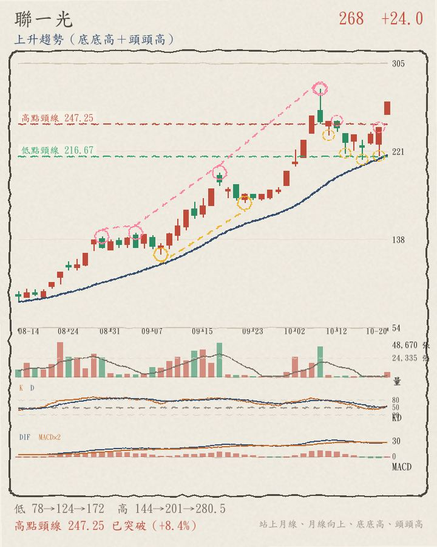

← 回股市觀察
盤中觀察 每日盤中觀察
2026/10/20 12:31 即時快照 · 當日盤中成交金額前 50 檔（上市 35＋上櫃 15）· 公開資料整理
46,457.77
加權指數 -364.31 點（-0.78%）
這是盤中快照，不是收盤結果。資料時間 2026-10-20 12:31:19（TWSE MIS 即時行情，上市／上櫃皆 delay=0）。
13:30 收盤（含最後一盤集合競價）會再變動；量能是以「已過交易時間比例」推估（尾盤大量時會低估）；
技術面標籤是把盤中現價代入原本以收盤價設計的規則（日線歷史只到前一交易日 9/14）。
統計範圍：候選池＝20261019 與 20261016 收盤成交值前段（上市 250／上櫃 130）取聯集，共 420 檔；再以今日盤中累計成交金額排序取
上市前 35＋上櫃前 15。漲跌家數是候選池內的數字，不是全市場（即時全市場家數證交所沒有開放端點）。
本頁為公開資料的整理與觀察，不構成投資建議，不報牌、不預測、不下買賣決策。
時程紀錄（本日盤中分析）▾ 點擊展開▴ 點擊收合
| 階段 | 時間 |
|---|
| 任務開始 | 由排程自動觸發（週一～週五 12:30） |
| 分析腳本執行 | 12:30:55 → 12:31:19（24.5 秒） |
| 資料快照時間 | 2026-10-20 12:31:19（行情時間戳 12:31:15） |
| 本頁產出 | 見頁尾版本時間 |
逐階段 log：
| 12:30:55 | START 盤中分析開始 |
| 12:30:55 | ① 抓即時指數（tse_t00 / otc_o00） |
| 12:30:55 | ② 建立候選池（20261019 與 20261016 成交值前段，上市＋上櫃） |
| 12:30:55 | 候選池共 420 檔 |
| 12:30:55 | ③ 抓即時候選池行情 |
| 12:31:19 | 取得即時報價 420 檔 |
| 12:31:19 | 候選池漲跌：漲 155／跌 247／平盤 18（快照時間 12:31:15） |
| 12:31:19 | ④ 選出 70 檔（上市 50＋上櫃 20），門檻 17.6 億 |
| 12:31:19 | ⑤ 抓日線歷史並算技術面 |
| 12:31:19 | ⑥ 產出（70 檔） |
K 線圖怎麼看：每一檔都附 K 線圖 —— 黃圈是轉折低點、粉圈是轉折高點（
虛線圈代表還沒確認的轉折）、藍線是月線（20 日均線）；頸線取最近兩個轉折低點之間的最高轉折高點，
突破頸線才會標示。
圖上另有兩條水平虛線、左側標數值：高點頸線（紅，最近兩個轉折低點之間的最高轉折高點）與低點頸線（綠，最近兩個轉折高點之間的最低轉折低點）；樣本不足就不畫。
紅色 K 棒＝收盤高於開盤、綠色＝收盤低於開盤。
大盤趨勢快篩（加權指數）（盤中近似） 資料日 2026/10/19・來源：證交所公開資料
主狀態：區間整理／均線糾結
前一交易日對照（10/16）：區間整理／均線糾結（量比 20 1.02） → 今日區間整理／均線糾結（量比 20 0.88）
指標、數值、判定（點開看 12 項明細：均線位置／排列、月線方向、頸線、轉折結構、位階、量價…）
加權指數今天跌 289.18 點（-0.61%），收 46,822.08、跌破月線 48,169.88；月線還在上彎，MA5 這條短均還沒收復，離高點頸線 49,285.22 還差 5.00%。
- 均線位置：4 條均線站上 1 條；沒站上的是 MA5 47,574.07（收盤比它低 1.58%）、MA10 48,582.67（收盤比它低 3.62%）、MA20 48,169.88（收盤比它低 2.80%）
- 月線方向：月線 MA20 現在 48,169.88，比 5 個交易日前高 376.11 點 → 上彎
- 量能：集中市場成交 8,667.1 億，比 5 日均量少很多（0.79 倍）、比 20 日均量少一些（0.88 倍）
- 關鍵價位：高點頸線 49,285.22，還差 5.00%；低點頸線 44,639.15，還在下方 4.89%
- 大小型股：加權 -0.61%、櫃買 -1.55%，兩邊同向

圖說：加權指數日 K（與個股圖相同標記）：黃圈＝轉折低點、粉圈＝轉折高點、虛線小圈＝還沒確認的轉折、藍線＝月線 MA20、水平虛線＝高點／低點頸線。最後一根是資料日當天。
本區塊為公開資料的技術面觀察，不構成投資建議，
不報牌、不預測、不下買賣決策。成交金額為集中市場總成交金額（含 ETF／權證），
與頁首摘要的「上市個股成交金額」口徑不同。標籤是統計，不是評分、也不是推薦。
上市 vs 上櫃（同期快篩）
加權 -0.61% vs 櫃買 -1.55%（同向） → 同向
（兩個市場分開寫，不合併成一個數字；櫃買為 TPEX 公開資料）
櫃買歷史：TPEX 逐日回補 130 根；來源：櫃買中心 www/zh-tw/indexInfo/sectinx（逐日，官方；OpenAPI tpex_index 只回當月）
（TPEX OpenAPI 只回當月，故逐日回補；歷史不足就不算該條均線並標「資料不足」，不用錯數字）
近 20 個交易日大盤狀態回溯（最新在上）（點開看逐日主狀態／量比／量價象限）
用同一支程式回算最近 20 個交易日（主狀態 S1~S8 與量比 20 皆為當日收盤當時的判定，
不是事後調整）；量比 20 未公布的日子寫「—」。
好條件最多的（前 10）
不好條件最多的（前 10）
好條件（8 項）：站上月線、月線向上、底底高、頭頭高、突破頸線、相對大盤強、攻擊量（量增＋上漲）、守住今日高檔（距今日高點 1% 內）。
不好條件（8 項）：跌破前低、今日下跌、相對大盤弱、在月線之下、量增下跌（出貨）、貼近今日低點（1% 內）、跌破昨日低點、月線下彎。
兩邊都是同一組日線資料＋盤中即時價算出來的「符合項目數」，只是把方向相反的條件分開數；
條件數不是評分或推薦，不構成投資建議。
逆勢上漲（加權下跌、個股上漲）（25 上市 20／上櫃 5）
盤中爆量（估量比 ≥ 1.5）（13 上市 8／上櫃 5）
跌破前低（線型轉弱）（28 上市 19／上櫃 9）
今日疲弱（跌幅前 10）（10 上市 6／上櫃 4）
逐檔（70 檔，依盤中成交金額排序）
南亞 1303 上市
300 -3.5（-1.15%）
高點墊高、底部不穩 盤中成交值 244.34 億・全榜第 1 名（上市第 1 名）・相對大盤 -0.37
好條件 4/8：站上月線、月線向上、頭頭高、突破頸線
不好條件 3/8：今日下跌、相對大盤弱、量增下跌（出貨）

12:31 盤中 300（-1.15%），比加權指數弱 0.37 個百分點、站上月線 276.3，已突破高點頸線 249，高點還在墊高（但底部沒同步墊高）。
- 月線位置：現價 300 在月線 276.3 之上（+8.6%）；5 日線 318.6 也在月線之上（短均在上）；月線向上
- 量能：以已過交易時間推估，今天成交量約是 20 日均量的 1.20 倍（量增），比 20 日均量大不少；下跌卻量增，量價背離
- 關鍵價位：高點頸線 249 已站上；前一交易日高點 316.5（低於 5.2%）；今天盤中高點 319（低於 6.0%）；今天盤中低點 300（高於 0.0%）
- 轉折結構：高點 251.5、322、350.5 墊高（頭頭高），但低點 220.5、223、223 沒有同步墊高；還沒確認的轉折低點 10-13 295、10-19 298；還沒確認的轉折高點 10-07 322、10-14 350.5（圖上虛線小圈）
富喬 1815 上櫃
153 -1.0（-0.65%）
上升趨勢（底底高＋頭頭高） 盤中成交值 229.79 億・全榜第 2 名（上櫃第 1 名）・相對大盤 +0.13
好條件 6/8：站上月線、月線向上、底底高、頭頭高、突破頸線、相對大盤強
不好條件 3/8：今日下跌、量增下跌（出貨）、貼近今日低點（1% 內）

12:31 盤中 153（-0.65%），比加權指數強 0.13 個百分點、站上月線 126.05，已突破高點頸線 138.33，轉折結構仍是底底高＋頭頭高。
- 月線位置：現價 153 在月線 126.05 之上（+21.4%）；5 日線 137.1 也在月線之上（短均在上）；月線向上
- 量能：以已過交易時間推估，今天成交量約是 20 日均量的 2.98 倍（爆量），比 20 日均量大不少；下跌卻量增，量價背離
- 關鍵價位：高點頸線 138.33 已站上；前一交易日高點 154（低於 0.6%）；今天盤中高點 161.5（低於 5.3%）；今天盤中低點 152.5（高於 0.3%）
- 轉折結構：低點 111、113、124 一路墊高、高點 89.4284、135、129.5 也一路墊高，是底底高＋頭頭高；還沒確認的轉折低點 10-13 124、10-15 125；還沒確認的轉折高點 10-14 140.5、10-19 154（圖上虛線小圈）
台積電 2330 上市
2405 -15.0（-0.62%）
區間或轉弱 盤中成交值 229.61 億・全榜第 3 名（上市第 2 名）・相對大盤 +0.16
好條件 3/8：月線向上、相對大盤強、守住今日高檔（距今日高點 1% 內）
不好條件 3/8：今日下跌、在月線之下、貼近今日低點（1% 內）

12:31 盤中 2405（-0.62%），比加權指數強 0.16 個百分點、跌破月線 2493，離高點頸線 2488 還差 3.3%，轉折還沒走出明顯方向。
- 月線位置：現價 2405 在月線 2493 之下（-3.5%）；5 日線 2452 也在月線之下（短均在下）；月線向上
- 量能：以已過交易時間推估，今天成交量約是 20 日均量的 0.53 倍（量縮），比 20 日均量少很多
- 關鍵價位：高點頸線 2488 還沒突破，差 3.3%；前一交易日高點 2420（低於 0.6%）；今天盤中高點 2415（低於 0.4%）；今天盤中低點 2395（高於 0.4%）
- 轉折結構：低點 2350、2375、2375 與高點 2505、2510、2590 都沒有明顯遞增，屬於區間震盪或轉弱；還沒確認的轉折低點 10-15 2420、10-19 2390；還沒確認的轉折高點 10-06 2590、10-14 2535（圖上虛線小圈）
國巨* 2327 上市
530 -4.0（-0.75%）
區間或轉弱 盤中成交值 167.24 億・全榜第 4 名（上市第 3 名）・相對大盤 +0.03
好條件 2/8：月線向上、相對大盤強
不好條件 3/8：跌破前低、今日下跌、在月線之下

12:31 盤中 530（-0.75%），比加權指數強 0.03 個百分點、跌破月線 587.65，離高點頸線 600.33 還差 11.7%，轉折還沒走出明顯方向。
- 月線位置：現價 530 在月線 587.65 之下（-9.8%）；5 日線 580 也在月線之下（短均在下）；月線向上
- 量能：以已過交易時間推估，今天成交量約是 20 日均量的 0.91 倍（量平），比 20 日均量少一些
- 關鍵價位：已跌破前一個轉折低點；高點頸線 600.33 還在現價上方 11.7%；前一交易日高點 542（低於 2.2%）；今天盤中高點 550（低於 3.6%）；今天盤中低點 530（高於 0.0%）
- 轉折結構：低點 520、548、548 與高點 605、601、686 都沒有明顯遞增，屬於區間震盪或轉弱；還沒確認的轉折低點 10-13 580、10-19 517；還沒確認的轉折高點 10-14 635、10-16 595（圖上虛線小圈）
台虹 8039 上市
302.5 +3.5（+1.17%）
區間或轉弱 盤中成交值 159.19 億・全榜第 5 名（上市第 4 名）・相對大盤 +1.95
好條件 4/8：站上月線、月線向上、相對大盤強、攻擊量（量增＋上漲）
不好條件 1/8：貼近今日低點（1% 內）

12:31 盤中 302.5（+1.17%），比加權指數強 1.95 個百分點、站上月線 285.225，離高點頸線 326.5 還差 7.4%，轉折還沒走出明顯方向。
- 月線位置：現價 302.5 在月線 285.225 之上（+6.1%）；5 日線 294.5 也在月線之上（短均在上）；月線向上
- 量能：以已過交易時間推估，今天成交量約是 20 日均量的 2.64 倍（爆量），比 20 日均量大不少；上漲又量增，量價配合
- 關鍵價位：高點頸線 326.5 還沒突破，差 7.4%；前一交易日高點 320.5（低於 5.6%）；今天盤中高點 328.5（低於 7.9%）；今天盤中低點 300（高於 0.8%）
- 轉折結構：低點 256.5、253、268.5 與高點 364、327.5、331.5 都沒有明顯遞增，屬於區間震盪或轉弱；還沒確認的轉折低點 10-13 268.5、10-15 283.5；還沒確認的轉折高點 10-15 326.5、10-19 320.5（圖上虛線小圈）
聯發科 2454 上市
4165 -40.0（-0.95%）
底部墊高、未過前高 盤中成交值 158.19 億・全榜第 6 名（上市第 5 名）・相對大盤 -0.17
好條件 1/8：底底高
不好條件 5/8：跌破前低、今日下跌、相對大盤弱、在月線之下、月線下彎

12:31 盤中 4165（-0.95%），比加權指數弱 0.17 個百分點、跌破月線 4774.25，離高點頸線 4380 還差 4.9%，底部還在墊高（但高點沒同步創高）。
- 月線位置：現價 4165 在月線 4774.25 之下（-12.8%）；5 日線 4324 也在月線之下（短均在下）；月線向下
- 量能：以已過交易時間推估，今天成交量約是 20 日均量的 0.65 倍（量縮），比 20 日均量少很多
- 關鍵價位：已跌破前一個轉折低點；高點頸線 4380 還在現價上方 4.9%；前一交易日高點 4250（低於 2.0%）；今天盤中高點 4305（低於 3.3%）；今天盤中低點 4165（高於 0.0%）
- 轉折結構：低點 3655、4430、4875 墊高（底底高），但高點 4855、5480、5165 沒有同步創高；還沒確認的轉折低點 10-15 4145、10-19 4145；還沒確認的轉折高點 10-14 4600、10-16 4360（圖上虛線小圈）
臻鼎-KY 4958 上市
551 +4.0（+0.73%）
底部墊高、未過前高 盤中成交值 135.16 億・全榜第 7 名（上市第 6 名）・相對大盤 +1.51
好條件 4/8：站上月線、月線向上、底底高、相對大盤強
不好條件 0/8：無

12:31 盤中 551（+0.73%），比加權指數強 1.51 個百分點、站上月線 529.65，離高點頸線 561 還差 1.8%，底部還在墊高（但高點沒同步創高）。
- 月線位置：現價 551 在月線 529.65 之上（+4.0%）；5 日線 548.4 也在月線之上（短均在上）；月線向上
- 量能：以已過交易時間推估，今天成交量約是 20 日均量的 0.96 倍（量平），跟 20 日均量差不多
- 關鍵價位：高點頸線 561 還沒突破，差 1.8%；前一交易日高點 553（低於 0.4%）；今天盤中高點 576（低於 4.3%）；今天盤中低點 538（高於 2.4%）
- 轉折結構：低點 421.5、446.5、463.5 墊高（底底高），但高點 550、505、613 沒有同步創高；還沒確認的轉折低點 10-15 518、10-19 533；還沒確認的轉折高點 10-14 568、10-16 565（圖上虛線小圈）
緯創 3231 上市
189.5 +9.5（+5.28%）
區間或轉弱 盤中成交值 132.12 億・全榜第 8 名（上市第 7 名）・相對大盤 +6.06
好條件 3/8：站上月線、相對大盤強、攻擊量（量增＋上漲）
不好條件 1/8：月線下彎

12:31 盤中 189.5（+5.28%），比加權指數強 6.06 個百分點、站上月線 185.3，離高點頸線 191.3 還差 0.9%，轉折還沒走出明顯方向。
- 月線位置：現價 189.5 在月線 185.3 之上（+2.3%）；5 日線 182.5 也在月線之下（短均在下）；月線向下
- 量能：以已過交易時間推估，今天成交量約是 20 日均量的 2.43 倍（爆量），比 20 日均量大不少；上漲又量增，量價配合
- 關鍵價位：高點頸線 191.3 還沒突破，差 0.9%；前一交易日高點 180.5（高於 5.0%）；今天盤中高點 193（低於 1.8%）；今天盤中低點 177（高於 7.1%）
- 轉折結構：低點 179.5、178、182.5 與高點 200.5、190.5、194.5 都沒有明顯遞增，屬於區間震盪或轉弱；還沒確認的轉折低點 10-15 173.5、10-19 175.5；還沒確認的轉折高點 10-06 194.5、10-12 192（圖上虛線小圈）
大立光 3008 上市
6100 -145.0（-2.32%）
區間或轉弱 盤中成交值 127.37 億・全榜第 9 名（上市第 8 名）・相對大盤 -1.54
好條件 1/8：月線向上
不好條件 5/8：跌破前低、今日下跌、相對大盤弱、在月線之下、貼近今日低點（1% 內）

12:31 盤中 6100（-2.32%），比加權指數弱 1.54 個百分點、跌破月線 6498.5，離高點頸線 6855 還差 11.0%，轉折還沒走出明顯方向。
- 月線位置：現價 6100 在月線 6498.5 之下（-6.1%）；5 日線 6681 也在月線之上（短均在上）；月線向上
- 量能：以已過交易時間推估，今天成交量約是 20 日均量的 1.06 倍（量平），比 20 日均量大一些
- 關鍵價位：已跌破前一個轉折低點；高點頸線 6855 還在現價上方 11.0%；前一交易日高點 6320（低於 3.5%）；今天盤中高點 6425（低於 5.1%）；今天盤中低點 6075（高於 0.4%）
- 轉折結構：低點 5930、5740、6355 與高點 7995、6750、7460 都沒有明顯遞增，屬於區間震盪或轉弱；還沒確認的轉折低點 10-12 6355、10-19 6065；還沒確認的轉折高點 10-13 7460、10-16 6845（圖上虛線小圈）
台玻 1802 上市
67.8 +1.8（+2.73%）
高點墊高、底部不穩 盤中成交值 117.58 億・全榜第 10 名（上市第 9 名）・相對大盤 +3.51
好條件 5/8：站上月線、月線向上、頭頭高、相對大盤強、攻擊量（量增＋上漲）
不好條件 0/8：無

12:31 盤中 67.8（+2.73%），比加權指數強 3.51 個百分點、站上月線 61.23，離高點頸線 67.8 還差 0.0%，高點還在墊高（但底部沒同步墊高）。
- 月線位置：現價 67.8 在月線 61.23 之上（+10.7%）；5 日線 64.88 也在月線之上（短均在上）；月線向上
- 量能：以已過交易時間推估，今天成交量約是 20 日均量的 4.18 倍（爆量），比 20 日均量大不少；上漲又量增，量價配合
- 關鍵價位：高點頸線 67.8 還沒突破，差 0.0%；前一交易日高點 69.7（低於 2.7%）；今天盤中高點 70.6（低於 4.0%）；今天盤中低點 65.8（高於 3.0%）
- 轉折結構：高點 64、61.7、61.7 墊高（頭頭高），但低點 57.5、56、56.6 沒有同步墊高；還沒確認的轉折低點 10-13 60.3、10-15 62；還沒確認的轉折高點 10-14 67.9、10-19 69.7（圖上虛線小圈）
華新科 2492 上市
370.5 +6.5（+1.79%）
底部墊高、未過前高 盤中成交值 109.53 億・全榜第 11 名（上市第 10 名）・相對大盤 +2.57
好條件 5/8：站上月線、月線向上、底底高、相對大盤強、攻擊量（量增＋上漲）
不好條件 1/8：跌破前低

12:31 盤中 370.5（+1.79%），比加權指數強 2.57 個百分點、站上月線 357.1，離高點頸線 428.75 還差 13.6%，底部還在墊高（但高點沒同步創高）。
- 月線位置：現價 370.5 在月線 357.1 之上（+3.8%）；5 日線 396.5 也在月線之上（短均在上）；月線向上
- 量能：以已過交易時間推估，今天成交量約是 20 日均量的 1.24 倍（量增），比 20 日均量大不少；上漲又量增，量價配合
- 關鍵價位：已跌破前一個轉折低點；高點頸線 428.75 還在現價上方 13.6%；前一交易日高點 372（低於 0.4%）；今天盤中高點 393.5（低於 5.8%）；今天盤中低點 365（高於 1.5%）
- 轉折結構：低點 291、298.5、376.5 墊高（底底高），但高點 344、326、431.5 沒有同步創高；還沒確認的轉折低點 10-13 376.5、10-19 355.5；還沒確認的轉折高點 10-08 431.5、10-14 426（圖上虛線小圈）
南亞科 2408 上市
423 -13.0（-2.98%）
區間或轉弱 盤中成交值 107.65 億・全榜第 12 名（上市第 11 名）・相對大盤 -2.20
好條件 0/8：無
不好條件 6/8：跌破前低、今日下跌、相對大盤弱、在月線之下、貼近今日低點（1% 內）、月線下彎

12:31 盤中 423（-2.98%），比加權指數弱 2.20 個百分點、跌破月線 501.675，離高點頸線 535.8 還差 21.1%，轉折還沒走出明顯方向。
- 月線位置：現價 423 在月線 501.675 之下（-15.7%）；5 日線 458.3 也在月線之下（短均在下）；月線向下
- 量能：以已過交易時間推估，今天成交量約是 20 日均量的 0.70 倍（量縮），比 20 日均量少很多
- 關鍵價位：已跌破前一個轉折低點；高點頸線 535.8 還在現價上方 21.1%；前一交易日高點 437（低於 3.2%）；今天盤中高點 433（低於 2.3%）；今天盤中低點 422.5（高於 0.1%）
- 轉折結構：低點 470、465.5、488 與高點 540、533、537 都沒有明顯遞增，屬於區間震盪或轉弱；還沒確認的轉折低點 10-15 432.5、10-19 415.5；還沒確認的轉折高點 10-08 537、10-16 461（圖上虛線小圈）
友達 2409 上市
36.2 -0.5（-1.36%）
上升趨勢（底底高＋頭頭高） 盤中成交值 102.59 億・全榜第 13 名（上市第 12 名）・相對大盤 -0.58
好條件 4/8：站上月線、月線向上、底底高、頭頭高
不好條件 3/8：今日下跌、相對大盤弱、貼近今日低點（1% 內）

12:31 盤中 36.2（-1.36%），比加權指數弱 0.58 個百分點、站上月線 35.805，離高點頸線 36.7 還差 1.4%，轉折結構仍是底底高＋頭頭高。
- 月線位置：現價 36.2 在月線 35.805 之上（+1.1%）；5 日線 35.58 也在月線之下（短均在下）；月線向上
- 量能：以已過交易時間推估，今天成交量約是 20 日均量的 0.67 倍（量縮），比 20 日均量少很多
- 關鍵價位：高點頸線 36.7 還沒突破，差 1.4%；前一交易日高點 36.7（低於 1.4%）；今天盤中高點 37.65（低於 3.9%）；今天盤中低點 36.1（高於 0.3%）
- 轉折結構：低點 24.6、27.75、33.75 一路墊高、高點 32.2、36.65、43.55 也一路墊高，是底底高＋頭頭高；還沒確認的轉折低點 10-13 33.75、10-19 34.45；還沒確認的轉折高點 10-05 43.55、10-16 36.75（圖上虛線小圈）
欣興 3037 上市
1075 -45.0（-4.02%）
高點墊高、底部不穩 盤中成交值 102.19 億・全榜第 14 名（上市第 13 名）・相對大盤 -3.24
好條件 2/8：月線向上、頭頭高
不好條件 3/8：今日下跌、相對大盤弱、在月線之下

12:31 盤中 1075（-4.02%），比加權指數弱 3.24 個百分點、跌破月線 1169.05，離高點頸線 1125 還差 4.4%，高點還在墊高（但底部沒同步墊高）。
- 月線位置：現價 1075 在月線 1169.05 之下（-8.0%）；5 日線 1130 也在月線之下（短均在下）；月線向上
- 量能：以已過交易時間推估，今天成交量約是 20 日均量的 0.82 倍（量平），比 20 日均量少很多
- 關鍵價位：高點頸線 1125 還沒突破，差 4.4%；前一交易日高點 1125（低於 4.4%）；今天盤中高點 1125（低於 4.4%）；今天盤中低點 1075（高於 0.0%）
- 轉折結構：高點 1005、1200、1420 墊高（頭頭高），但低點 1030、873、932 沒有同步墊高；還沒確認的轉折低點 10-15 1070、10-19 1040；還沒確認的轉折高點 10-16 1125、10-19 1125（圖上虛線小圈）
聯茂 6213 上市
763 -4.0（-0.52%）
區間或轉弱 盤中成交值 99.95 億・全榜第 15 名（上市第 14 名）・相對大盤 +0.26
好條件 3/8：站上月線、月線向上、相對大盤強
不好條件 1/8：今日下跌

12:31 盤中 763（-0.52%），比加權指數強 0.26 個百分點、站上月線 686.6，離高點頸線 821.5 還差 7.1%，轉折還沒走出明顯方向。
- 月線位置：現價 763 在月線 686.6 之上（+11.1%）；5 日線 798.2 也在月線之上（短均在上）；月線向上
- 量能：以已過交易時間推估，今天成交量約是 20 日均量的 1.01 倍（量平），跟 20 日均量差不多
- 關鍵價位：高點頸線 821.5 還沒突破，差 7.1%；前一交易日高點 785（低於 2.8%）；今天盤中高點 792（低於 3.7%）；今天盤中低點 748（高於 2.0%）
- 轉折結構：低點 493.5、482、731 與高點 599、555、858 都沒有明顯遞增，屬於區間震盪或轉弱；還沒確認的轉折低點 10-13 731、10-19 721；還沒確認的轉折高點 10-12 825、10-14 858（圖上虛線小圈）
穩懋 3105 上櫃
477.5 -4.5（-0.93%）
區間或轉弱 盤中成交值 96.79 億・全榜第 16 名（上櫃第 2 名）・相對大盤 -0.15
好條件 1/8：月線向上
不好條件 5/8：跌破前低、今日下跌、相對大盤弱、在月線之下、貼近今日低點（1% 內）

12:31 盤中 477.5（-0.93%），比加權指數弱 0.15 個百分點、跌破月線 533.975，離高點頸線 487.33 還差 2.0%，轉折還沒走出明顯方向。
- 月線位置：現價 477.5 在月線 533.975 之下（-10.6%）；5 日線 519.6 也在月線之下（短均在下）；月線向上
- 量能：以已過交易時間推估，今天成交量約是 20 日均量的 0.99 倍（量平），跟 20 日均量差不多
- 關鍵價位：已跌破前一個轉折低點；高點頸線 487.33 還在現價上方 2.0%；前一交易日高點 491（低於 2.7%）；今天盤中高點 517（低於 7.6%）；今天盤中低點 476（高於 0.3%）
- 轉折結構：低點 438.5、420、482 與高點 492、478、630 都沒有明顯遞增，屬於區間震盪或轉弱；還沒確認的轉折低點 10-13 522、10-19 454；還沒確認的轉折高點 10-12 604、10-14 570（圖上虛線小圈）
台燿 6274 上櫃
1585 -45.0（-2.76%）
高點墊高、底部不穩 盤中成交值 95.42 億・全榜第 17 名（上櫃第 3 名）・相對大盤 -1.98
好條件 3/8：站上月線、月線向上、頭頭高
不好條件 3/8：今日下跌、相對大盤弱、貼近今日低點（1% 內）

12:31 盤中 1585（-2.76%），比加權指數弱 1.98 個百分點、站上月線 1583.5，離高點頸線 1786.67 還差 11.3%，高點還在墊高（但底部沒同步墊高）。
- 月線位置：現價 1585 在月線 1583.5 之上（+0.1%）；5 日線 1652 也在月線之上（短均在上）；月線向上
- 量能：以已過交易時間推估，今天成交量約是 20 日均量的 0.77 倍（量平），比 20 日均量少很多
- 關鍵價位：高點頸線 1786.67 還沒突破，差 11.3%；前一交易日高點 1640（低於 3.4%）；今天盤中高點 1650（低於 3.9%）；今天盤中低點 1580（高於 0.3%）
- 轉折結構：高點 1430、1460、1835 墊高（頭頭高），但低點 1395、1295、1275 沒有同步墊高；還沒確認的轉折低點 10-13 1595、10-19 1500；還沒確認的轉折高點 10-07 1835、10-14 1745（圖上虛線小圈）
金像電 2368 上市
1200 -50.0（-4.00%）
區間或轉弱 盤中成交值 93.58 億・全榜第 18 名（上市第 15 名）・相對大盤 -3.22
好條件 2/8：站上月線、月線向上
不好條件 2/8：今日下跌、相對大盤弱

12:31 盤中 1200（-4.00%），比加權指數弱 3.22 個百分點、站上月線 1154.75，離高點頸線 1271.67 還差 5.6%，轉折還沒走出明顯方向。
- 月線位置：現價 1200 在月線 1154.75 之上（+3.9%）；5 日線 1223 也在月線之上（短均在上）；月線向上
- 量能：以已過交易時間推估，今天成交量約是 20 日均量的 0.86 倍（量平），比 20 日均量少一些
- 關鍵價位：高點頸線 1271.67 還沒突破，差 5.6%；前一交易日高點 1265（低於 5.1%）；今天盤中高點 1255（低於 4.4%）；今天盤中低點 1200（高於 0.0%）
- 轉折結構：低點 1030、950、1120 與高點 1145、1085、1310 都沒有明顯遞增，屬於區間震盪或轉弱；還沒確認的轉折低點 10-15 1160、10-19 1185；還沒確認的轉折高點 10-14 1275、10-16 1295（圖上虛線小圈）
台達電 2308 上市
1610 -30.0（-1.83%）
高點墊高、底部不穩 盤中成交值 89.24 億・全榜第 19 名（上市第 16 名）・相對大盤 -1.05
好條件 2/8：月線向上、頭頭高
不好條件 4/8：跌破前低、今日下跌、相對大盤弱、在月線之下

12:31 盤中 1610（-1.83%），比加權指數弱 1.05 個百分點、跌破月線 1844.75，離高點頸線 1968.33 還差 18.2%，高點還在墊高（但底部沒同步墊高）。
- 月線位置：現價 1610 在月線 1844.75 之下（-12.7%）；5 日線 1693 也在月線之下（短均在下）；月線向上
- 量能：以已過交易時間推估，今天成交量約是 20 日均量的 0.65 倍（量縮），比 20 日均量少很多
- 關鍵價位：已跌破前一個轉折低點；高點頸線 1968.33 還在現價上方 18.2%；前一交易日高點 1655（低於 2.7%）；今天盤中高點 1645（低於 2.1%）；今天盤中低點 1610（高於 0.0%）
- 轉折結構：高點 1885、1965、2115 墊高（頭頭高），但低點 1725、1560、1810 沒有同步墊高；還沒確認的轉折低點 10-15 1610、10-19 1590；還沒確認的轉折高點 10-01 1935、10-06 2115（圖上虛線小圈）
景碩 3189 上市
964 -18.0（-1.83%）
區間或轉弱 盤中成交值 89.24 億・全榜第 20 名（上市第 17 名）・相對大盤 -1.05
好條件 1/8：月線向上
不好條件 4/8：今日下跌、相對大盤弱、在月線之下、貼近今日低點（1% 內）

12:31 盤中 964（-1.83%），比加權指數弱 1.05 個百分點、跌破月線 983.85，離高點頸線 1065 還差 9.5%，轉折還沒走出明顯方向。
- 月線位置：現價 964 在月線 983.85 之下（-2.0%）；5 日線 1010.2 也在月線之上（短均在上）；月線向上
- 量能：以已過交易時間推估，今天成交量約是 20 日均量的 0.65 倍（量縮），比 20 日均量少很多
- 關鍵價位：高點頸線 1065 還沒突破，差 9.5%；前一交易日高點 990（低於 2.6%）；今天盤中高點 1010（低於 4.6%）；今天盤中低點 961（高於 0.3%）
- 轉折結構：低點 766、766、784 與高點 835、835、1150 都沒有明顯遞增，屬於區間震盪或轉弱；還沒確認的轉折低點 10-15 968、10-19 950；還沒確認的轉折高點 10-14 1085、10-16 1045（圖上虛線小圈）
禾伸堂 3026 上市
808 +73.0（+9.93%）
高點墊高、底部不穩 盤中成交值 87.87 億・全榜第 21 名（上市第 18 名）・相對大盤 +10.71
好條件 4/8：月線向上、頭頭高、相對大盤強、攻擊量（量增＋上漲）
不好條件 1/8：在月線之下

12:31 盤中 808（+9.93%），比加權指數強 10.71 個百分點、跌破月線 808.05，離高點頸線 876.25 還差 7.8%，高點還在墊高（但底部沒同步墊高）。
- 月線位置：現價 808 在月線 808.05 之下（-0.0%）；5 日線 802.4 也在月線之下（短均在下）；月線向上
- 量能：以已過交易時間推估，今天成交量約是 20 日均量的 1.28 倍（量增），比 20 日均量大不少；上漲又量增，量價配合
- 關鍵價位：高點頸線 876.25 還沒突破，差 7.8%；前一交易日高點 780（高於 3.6%）；今天盤中高點 808（高於 0.0%）；今天盤中低點 734（高於 10.1%）
- 轉折結構：高點 856、881、888 墊高（頭頭高），但低點 760、796、793 沒有同步墊高；還沒確認的轉折低點 10-13 793、10-19 726；還沒確認的轉折高點 10-08 888、10-14 880（圖上虛線小圈）
聯電 2303 上市
128 -3.5（-2.66%）
底部墊高、未過前高 盤中成交值 87.6 億・全榜第 22 名（上市第 19 名）・相對大盤 -1.88
好條件 1/8：底底高
不好條件 6/8：跌破前低、今日下跌、相對大盤弱、在月線之下、貼近今日低點（1% 內）、月線下彎

12:31 盤中 128（-2.66%），比加權指數弱 1.88 個百分點、跌破月線 149.425，離高點頸線 146.5 還差 12.6%，底部還在墊高（但高點沒同步創高）。
- 月線位置：現價 128 在月線 149.425 之下（-14.3%）；5 日線 136.3 也在月線之下（短均在下）；月線向下
- 量能：以已過交易時間推估，今天成交量約是 20 日均量的 0.53 倍（量縮），比 20 日均量少很多
- 關鍵價位：已跌破前一個轉折低點；高點頸線 146.5 還在現價上方 12.6%；前一交易日高點 132（低於 3.0%）；今天盤中高點 131.5（低於 2.7%）；今天盤中低點 127（高於 0.8%）
- 轉折結構：低點 123、135、151.5 墊高（底底高），但高點 145.5、168.5、165 沒有同步創高；還沒確認的轉折低點 10-15 132.5、10-19 126；還沒確認的轉折高點 10-07 150、10-14 144（圖上虛線小圈）
南電 8046 上市
1320 -60.0（-4.35%）
底部墊高、未過前高 盤中成交值 84.33 億・全榜第 23 名（上市第 20 名）・相對大盤 -3.57
好條件 2/8：月線向上、底底高
不好條件 4/8：今日下跌、相對大盤弱、在月線之下、貼近今日低點（1% 內）

12:31 盤中 1320（-4.35%），比加權指數弱 3.57 個百分點、跌破月線 1333.75，離高點頸線 1425 還差 7.4%，底部還在墊高（但高點沒同步創高）。
- 月線位置：現價 1320 在月線 1333.75 之下（-1.0%）；5 日線 1390 也在月線之上（短均在上）；月線向上
- 量能：以已過交易時間推估，今天成交量約是 20 日均量的 0.75 倍（量平），比 20 日均量少很多
- 關鍵價位：高點頸線 1425 還沒突破，差 7.4%；前一交易日高點 1390（低於 5.0%）；今天盤中高點 1385（低於 4.7%）；今天盤中低點 1310（高於 0.8%）
- 轉折結構：低點 1010、1025、1050 墊高（底底高），但高點 1335、1125、1560 沒有同步創高；還沒確認的轉折低點 10-15 1320、10-19 1295；還沒確認的轉折高點 10-14 1440、10-16 1410（圖上虛線小圈）
創意 3443 上市
7825 -5.0（-0.06%）
上升趨勢（底底高＋頭頭高） 盤中成交值 82.16 億・全榜第 24 名（上市第 21 名）・相對大盤 +0.72
好條件 4/8：月線向上、底底高、頭頭高、相對大盤強
不好條件 3/8：今日下跌、在月線之下、貼近今日低點（1% 內）

12:31 盤中 7825（-0.06%），比加權指數強 0.72 個百分點、跌破月線 7976.5，離高點頸線 8546.67 還差 8.4%，轉折結構仍是底底高＋頭頭高。
- 月線位置：現價 7825 在月線 7976.5 之下（-1.9%）；5 日線 7864 也在月線之下（短均在下）；月線向上
- 量能：以已過交易時間推估，今天成交量約是 20 日均量的 0.93 倍（量平），比 20 日均量少一些
- 關鍵價位：高點頸線 8546.67 還沒突破，差 8.4%；前一交易日高點 7980（低於 1.9%）；今天盤中高點 8020（低於 2.4%）；今天盤中低點 7755（高於 0.9%）
- 轉折結構：低點 5680、5850、7730 一路墊高、高點 6490、8545、8750 也一路墊高，是底底高＋頭頭高；還沒確認的轉折低點 10-13 7700、10-19 7065；還沒確認的轉折高點 10-07 8750、10-14 8345（圖上虛線小圈）
緯穎 6669 上市
1935 +50.0（+2.65%）
區間或轉弱 盤中成交值 67.88 億・全榜第 25 名（上市第 22 名）・相對大盤 +3.43
好條件 2/8：相對大盤強、攻擊量（量增＋上漲）
不好條件 3/8：跌破前低、在月線之下、月線下彎

12:31 盤中 1935（+2.65%），比加權指數強 3.43 個百分點、跌破月線 2114.25，離高點頸線 2297.41 還差 15.8%，轉折還沒走出明顯方向。
- 月線位置：現價 1935 在月線 2114.25 之下（-8.5%）；5 日線 1989 也在月線之下（短均在下）；月線向下
- 量能：以已過交易時間推估，今天成交量約是 20 日均量的 1.12 倍（量增），比 20 日均量大一些；上漲又量增，量價配合
- 關鍵價位：已跌破前一個轉折低點；高點頸線 2297.41 還在現價上方 15.8%；前一交易日高點 1895（高於 2.1%）；今天盤中高點 1960（低於 1.3%）；今天盤中低點 1870（高於 3.5%）
- 轉折結構：低點 2085、2075、2080 與高點 2259.63、2875、2335 都沒有明顯遞增，屬於區間震盪或轉弱；還沒確認的轉折低點 10-08 2200、10-19 1795；還沒確認的轉折高點 10-12 2310、10-14 2285（圖上虛線小圈）
奇鋐 3017 上市
3380 +60.0（+1.81%）
區間或轉弱 盤中成交值 63.88 億・全榜第 26 名（上市第 23 名）・相對大盤 +2.59
好條件 2/8：突破頸線、相對大盤強
不好條件 2/8：在月線之下、月線下彎

12:31 盤中 3380（+1.81%），比加權指數強 2.59 個百分點、跌破月線 3409.25，已突破高點頸線 3365，轉折還沒走出明顯方向。
- 月線位置：現價 3380 在月線 3409.25 之下（-0.9%）；5 日線 3263 也在月線之下（短均在下）；月線向下
- 量能：以已過交易時間推估，今天成交量約是 20 日均量的 0.83 倍（量平），比 20 日均量少很多；上漲但量縮，量價背離
- 關鍵價位：高點頸線 3365 已站上；前一交易日高點 3350（高於 0.9%）；今天盤中高點 3420（低於 1.2%）；今天盤中低點 3270（高於 3.4%）
- 轉折結構：低點 3100、3100、3285 與高點 3595、3600、3700 都沒有明顯遞增，屬於區間震盪或轉弱；還沒確認的轉折低點 10-13 3275、10-15 3050；還沒確認的轉折高點 10-13 3420、10-16 3355（圖上虛線小圈）
環球晶 6488 上櫃
855 -27.0（-3.06%）
區間或轉弱 盤中成交值 62.95 億・全榜第 27 名（上櫃第 4 名）・相對大盤 -2.28
好條件 1/8：月線向上
不好條件 5/8：跌破前低、今日下跌、相對大盤弱、在月線之下、貼近今日低點（1% 內）

12:31 盤中 855（-3.06%），比加權指數弱 2.28 個百分點、跌破月線 1024.9，離高點頸線 1018.75 還差 16.1%，轉折還沒走出明顯方向。
- 月線位置：現價 855 在月線 1024.9 之下（-16.6%）；5 日線 948.4 也在月線之下（短均在下）；月線向上
- 量能：以已過交易時間推估，今天成交量約是 20 日均量的 0.65 倍（量縮），比 20 日均量少很多
- 關鍵價位：已跌破前一個轉折低點；高點頸線 1018.75 還在現價上方 16.1%；前一交易日高點 883（低於 3.2%）；今天盤中高點 890（低於 3.9%）；今天盤中低點 852（高於 0.4%）
- 轉折結構：低點 931、875、872 與高點 1015、1010、1260 都沒有明顯遞增，屬於區間震盪或轉弱；還沒確認的轉折低點 10-06 1145、10-19 838；還沒確認的轉折高點 10-06 1260（圖上虛線小圈）
玉晶光 3406 上市
1050 +5.0（+0.48%）
高點墊高、底部不穩 盤中成交值 59.41 億・全榜第 28 名（上市第 24 名）・相對大盤 +1.26
好條件 4/8：站上月線、月線向上、頭頭高、相對大盤強
不好條件 0/8：無

12:31 盤中 1050（+0.48%），比加權指數強 1.26 個百分點、站上月線 1005.05，離高點頸線 1157.5 還差 9.3%，高點還在墊高（但底部沒同步墊高）。
- 月線位置：現價 1050 在月線 1005.05 之上（+4.5%）；5 日線 1097 也在月線之上（短均在上）；月線向上
- 量能：以已過交易時間推估，今天成交量約是 20 日均量的 1.04 倍（量平），跟 20 日均量差不多
- 關鍵價位：高點頸線 1157.5 還沒突破，差 9.3%；前一交易日高點 1085（低於 3.2%）；今天盤中高點 1130（低於 7.1%）；今天盤中低點 1050（高於 0.0%）
- 轉折結構：高點 1090、1140、1045 墊高（頭頭高），但低點 906、869、1010 沒有同步墊高；還沒確認的轉折低點 10-15 1010、10-19 1005；還沒確認的轉折高點 10-13 1175、10-16 1220（圖上虛線小圈）
金居 8358 上櫃
480.5 -3.5（-0.72%）
底部墊高、未過前高 盤中成交值 58.56 億・全榜第 29 名（上櫃第 5 名）・相對大盤 +0.06
好條件 2/8：底底高、相對大盤強
不好條件 5/8：今日下跌、在月線之下、量增下跌（出貨）、貼近今日低點（1% 內）、月線下彎

12:31 盤中 480.5（-0.72%），比加權指數強 0.06 個百分點、跌破月線 506.275，離高點頸線 571 還差 15.8%，底部還在墊高（但高點沒同步創高）。
- 月線位置：現價 480.5 在月線 506.275 之下（-5.1%）；5 日線 482.5 也在月線之下（短均在下）；月線向下
- 量能：以已過交易時間推估，今天成交量約是 20 日均量的 1.31 倍（量增），比 20 日均量大不少；下跌卻量增，量價背離
- 關鍵價位：高點頸線 571 還沒突破，差 15.8%；前一交易日高點 502（低於 4.3%）；今天盤中高點 510（低於 5.8%）；今天盤中低點 480（高於 0.1%）
- 轉折結構：低點 399、469.5、477 墊高（底底高），但高點 564、535、578 沒有同步創高；還沒確認的轉折低點 10-15 453、10-19 447.5；還沒確認的轉折高點 10-06 578、10-19 502（圖上虛線小圈）
智邦 2345 上市
2000 -5.0（-0.25%）
區間或轉弱 盤中成交值 57.74 億・全榜第 30 名（上市第 25 名）・相對大盤 +0.53
好條件 3/8：站上月線、月線向上、相對大盤強
不好條件 1/8：今日下跌

12:31 盤中 2000（-0.25%），比加權指數強 0.53 個百分點、站上月線 1950.5，離高點頸線 2112.5 還差 5.3%，轉折還沒走出明顯方向。
- 月線位置：現價 2000 在月線 1950.5 之上（+2.5%）；5 日線 2005 也在月線之上（短均在上）；月線向上
- 量能：以已過交易時間推估，今天成交量約是 20 日均量的 0.86 倍（量平），比 20 日均量少一些
- 關鍵價位：高點頸線 2112.5 還沒突破，差 5.3%；前一交易日高點 2055（低於 2.7%）；今天盤中高點 2055（低於 2.7%）；今天盤中低點 1960（高於 2.0%）
- 轉折結構：低點 1790、1770、1970 與高點 2235、1955、2145 都沒有明顯遞增，屬於區間震盪或轉弱；還沒確認的轉折低點 10-15 1910、10-19 1910；還沒確認的轉折高點 10-13 2145、10-19 2055（圖上虛線小圈）
華通 2313 上市
247.5 -0.5（-0.20%）
底部墊高、未過前高 盤中成交值 57.53 億・全榜第 31 名（上市第 26 名）・相對大盤 +0.58
好條件 4/8：站上月線、月線向上、底底高、相對大盤強
不好條件 1/8：今日下跌

12:31 盤中 247.5（-0.20%），比加權指數強 0.58 個百分點、站上月線 235.25，離高點頸線 256.7 還差 3.6%，底部還在墊高（但高點沒同步創高）。
- 月線位置：現價 247.5 在月線 235.25 之上（+5.2%）；5 日線 243.6 也在月線之上（短均在上）；月線向上
- 量能：以已過交易時間推估，今天成交量約是 20 日均量的 1.05 倍（量平），比 20 日均量大一些
- 關鍵價位：高點頸線 256.7 還沒突破，差 3.6%；前一交易日高點 252（低於 1.8%）；今天盤中高點 255（低於 2.9%）；今天盤中低點 245（高於 1.0%）
- 轉折結構：低點 205.5、213、219 墊高（底底高），但高點 258、235、261 沒有同步創高；還沒確認的轉折低點 10-13 235.5、10-15 228；還沒確認的轉折高點 10-14 252.5、10-19 252（圖上虛線小圈）
日月光投控 3711 上市
664 -6.0（-0.90%）
上升趨勢（底底高＋頭頭高） 盤中成交值 54.65 億・全榜第 32 名（上市第 27 名）・相對大盤 -0.12
好條件 3/8：月線向上、底底高、頭頭高
不好條件 5/8：跌破前低、今日下跌、相對大盤弱、在月線之下、貼近今日低點（1% 內）

12:31 盤中 664（-0.90%），比加權指數弱 0.12 個百分點、跌破月線 701.9，離高點頸線 762 還差 12.9%，轉折結構仍是底底高＋頭頭高。
- 月線位置：現價 664 在月線 701.9 之下（-5.4%）；5 日線 700.2 也在月線之下（短均在下）；月線向上
- 量能：以已過交易時間推估，今天成交量約是 20 日均量的 0.70 倍（量縮），比 20 日均量少很多
- 關鍵價位：已跌破前一個轉折低點；高點頸線 762 還在現價上方 12.9%；前一交易日高點 675（低於 1.6%）；今天盤中高點 680（低於 2.4%）；今天盤中低點 662（高於 0.3%）
- 轉折結構：低點 592、678、715 一路墊高、高點 711、758、765 也一路墊高，是底底高＋頭頭高；還沒確認的轉折低點 10-13 731、10-19 639；還沒確認的轉折高點 10-12 765、10-14 763（圖上虛線小圈）
旺矽 6223 上櫃
4960 -275.0（-5.25%）
區間或轉弱 盤中成交值 52.38 億・全榜第 33 名（上櫃第 6 名）・相對大盤 -4.47
好條件 0/8：無
不好條件 8/8：跌破前低、今日下跌、相對大盤弱、在月線之下、量增下跌（出貨）、貼近今日低點（1% 內）、跌破昨日低點、月線下彎

12:31 盤中 4960（-5.25%），比加權指數弱 4.47 個百分點、跌破月線 5490.75，離高點頸線 6026.67 還差 17.7%，轉折還沒走出明顯方向。
- 月線位置：現價 4960 在月線 5490.75 之下（-9.7%）；5 日線 5513 也在月線之上（短均在上）；月線向下
- 量能：以已過交易時間推估，今天成交量約是 20 日均量的 1.43 倍（量增），比 20 日均量大不少；下跌卻量增，量價背離
- 關鍵價位：已跌破前一個轉折低點；高點頸線 6026.67 還在現價上方 17.7%；前一交易日高點 5305（低於 6.5%）；今天盤中高點 5370（低於 7.6%）；今天盤中低點 4915（高於 0.9%）
- 轉折結構：低點 5365、5090、4995 與高點 6060、5860、6160 都沒有明顯遞增，屬於區間震盪或轉弱；還沒確認的轉折低點 10-08 5450、10-16 4950；還沒確認的轉折高點 10-07 5725、10-13 6160（圖上虛線小圈）
台光電 2383 上市
5005 -120.0（-2.34%）
區間或轉弱 盤中成交值 50.9 億・全榜第 34 名（上市第 28 名）・相對大盤 -1.56
好條件 1/8：月線向上
不好條件 4/8：今日下跌、相對大盤弱、在月線之下、貼近今日低點（1% 內）

12:31 盤中 5005（-2.34%），比加權指數弱 1.56 個百分點、跌破月線 5284.75，離高點頸線 6328.33 還差 20.9%，轉折還沒走出明顯方向。
- 月線位置：現價 5005 在月線 5284.75 之下（-5.3%）；5 日線 5295 也在月線之上（短均在上）；月線向上
- 量能：以已過交易時間推估，今天成交量約是 20 日均量的 0.51 倍（量縮），比 20 日均量少很多
- 關鍵價位：高點頸線 6328.33 還沒突破，差 20.9%；前一交易日高點 5165（低於 3.1%）；今天盤中高點 5200（低於 3.7%）；今天盤中低點 5000（高於 0.1%）
- 轉折結構：低點 5255、4635、4855 與高點 5645、5170、6325 都沒有明顯遞增，屬於區間震盪或轉弱；還沒確認的轉折低點 10-15 4980、10-19 4955；還沒確認的轉折高點 10-07 6325、10-12 6190（圖上虛線小圈）
鴻海 2317 上市
242.5 +3.0（+1.25%）
底部墊高、未過前高 盤中成交值 48.43 億・全榜第 35 名（上市第 29 名）・相對大盤 +2.03
好條件 3/8：底底高、相對大盤強、守住今日高檔（距今日高點 1% 內）
不好條件 3/8：跌破前低、在月線之下、月線下彎

12:31 盤中 242.5（+1.25%），比加權指數強 2.03 個百分點、跌破月線 248.95，離高點頸線 246.5 還差 1.6%，底部還在墊高（但高點沒同步創高）。
- 月線位置：現價 242.5 在月線 248.95 之下（-2.6%）；5 日線 241.2 也在月線之下（短均在下）；月線向下
- 量能：以已過交易時間推估，今天成交量約是 20 日均量的 0.67 倍（量縮），比 20 日均量少很多；上漲但量縮，量價背離
- 關鍵價位：已跌破前一個轉折低點；高點頸線 246.5 還在現價上方 1.6%；前一交易日高點 242.5（高於 0.0%）；今天盤中高點 244.5（低於 0.8%）；今天盤中低點 237（高於 2.3%）
- 轉折結構：低點 238、243.5、247 墊高（底底高），但高點 259、257、266.5 沒有同步創高；還沒確認的轉折低點 10-15 238、10-19 238.5；還沒確認的轉折高點 10-14 246、10-16 247（圖上虛線小圈）
台塑化 6505 上市
107 -9.0（-7.76%）
底部墊高、未過前高 盤中成交值 47.81 億・全榜第 36 名（上市第 30 名）・相對大盤 -6.98
好條件 3/8：站上月線、月線向上、底底高
不好條件 5/8：今日下跌、相對大盤弱、量增下跌（出貨）、貼近今日低點（1% 內）、跌破昨日低點

12:31 盤中 107（-7.76%），比加權指數弱 6.98 個百分點、站上月線 101.165，離高點頸線 128.5 還差 16.7%，底部還在墊高（但高點沒同步創高）。
- 月線位置：現價 107 在月線 101.165 之上（+5.8%）；5 日線 117.7 也在月線之上（短均在上）；月線向上
- 量能：以已過交易時間推估，今天成交量約是 20 日均量的 1.52 倍（爆量），比 20 日均量大不少；下跌卻量增，量價背離
- 關鍵價位：高點頸線 128.5 還沒突破，差 16.7%；前一交易日高點 128（低於 16.4%）；今天盤中高點 117（低於 8.5%）；今天盤中低點 106.5（高於 0.5%）
- 轉折結構：低點 65.4、68.6、80 墊高（底底高），但高點 90.6、89.8、129 沒有同步創高；還沒確認的轉折低點 10-13 105、10-15 108；還沒確認的轉折高點 10-14 129、10-19 128（圖上虛線小圈）
台表科 6278 上市
291.5 +2.0（+0.69%）
上升趨勢（底底高＋頭頭高） 盤中成交值 47.48 億・全榜第 37 名（上市第 31 名）・相對大盤 +1.47
好條件 7/8：站上月線、月線向上、底底高、頭頭高、突破頸線、相對大盤強、攻擊量（量增＋上漲）
不好條件 0/8：無

12:31 盤中 291.5（+0.69%），比加權指數強 1.47 個百分點、站上月線 237.325，已突破高點頸線 222，轉折結構仍是底底高＋頭頭高。
- 月線位置：現價 291.5 在月線 237.325 之上（+22.8%）；5 日線 289 也在月線之上（短均在上）；月線向上
- 量能：以已過交易時間推估，今天成交量約是 20 日均量的 1.29 倍（量增），比 20 日均量大不少；上漲又量增，量價配合
- 關鍵價位：高點頸線 222 已站上；前一交易日高點 295.5（低於 1.4%）；今天盤中高點 297.5（低於 2.0%）；今天盤中低點 283.5（高於 2.8%）
- 轉折結構：低點 172、179.5、211.5 一路墊高、高點 181.5、210、223 也一路墊高，是底底高＋頭頭高；還沒確認的轉折低點 10-15 282、10-19 276；還沒確認的轉折高點 10-16 314.5（圖上虛線小圈）
信昌電 6173 上櫃
267.5 -4.0（-1.47%）
區間或轉弱 盤中成交值 47.47 億・全榜第 38 名（上櫃第 7 名）・相對大盤 -0.69
好條件 0/8：無
不好條件 7/8：跌破前低、今日下跌、相對大盤弱、在月線之下、量增下跌（出貨）、跌破昨日低點、月線下彎

12:31 盤中 267.5（-1.47%），比加權指數弱 0.69 個百分點、跌破月線 311.075，離高點頸線 302.13 還差 11.5%，轉折還沒走出明顯方向。
- 月線位置：現價 267.5 在月線 311.075 之下（-14.0%）；5 日線 296.002 也在月線之下（短均在下）；月線向下
- 量能：以已過交易時間推估，今天成交量約是 20 日均量的 1.48 倍（量增），比 20 日均量大不少；下跌卻量增，量價背離
- 關鍵價位：已跌破前一個轉折低點；高點頸線 302.13 還在現價上方 11.5%；前一交易日高點 271.5（低於 1.5%）；今天盤中高點 298（低於 10.2%）；今天盤中低點 248（高於 7.9%）
- 轉折結構：低點 302.128、302.128、302.128 與高點 343.085、302.128、302.128 都沒有明顯遞增，屬於區間震盪或轉弱；還沒確認的轉折低點 10-15 302.128、10-19 271.5；還沒確認的轉折高點 10-15 302.128、10-16 302.128（圖上虛線小圈）
華邦電 2344 上市
154 -1.5（-0.96%）
底部墊高、未過前高 盤中成交值 47.42 億・全榜第 39 名（上市第 32 名）・相對大盤 -0.18
好條件 1/8：底底高
不好條件 5/8：跌破前低、今日下跌、相對大盤弱、在月線之下、月線下彎

12:31 盤中 154（-0.96%），比加權指數弱 0.18 個百分點、跌破月線 171.925，離高點頸線 182.38 還差 15.6%，底部還在墊高（但高點沒同步創高）。
- 月線位置：現價 154 在月線 171.925 之下（-10.4%）；5 日線 159.7 也在月線之下（短均在下）；月線向下
- 量能：以已過交易時間推估，今天成交量約是 20 日均量的 0.52 倍（量縮），比 20 日均量少很多
- 關鍵價位：已跌破前一個轉折低點；高點頸線 182.38 還在現價上方 15.6%；前一交易日高點 156（低於 1.3%）；今天盤中高點 157.5（低於 2.2%）；今天盤中低點 151（高於 2.0%）
- 轉折結構：低點 158.5、166、174 墊高（底底高），但高點 192、180.5、184 沒有同步創高；還沒確認的轉折低點 10-15 153、10-19 151；還沒確認的轉折高點 10-08 182、10-16 165（圖上虛線小圈）
高力 8996 上市
1565 +40.0（+2.62%）
上升趨勢（底底高＋頭頭高） 盤中成交值 46.67 億・全榜第 40 名（上市第 33 名）・相對大盤 +3.40
好條件 5/8：月線向上、底底高、頭頭高、相對大盤強、攻擊量（量增＋上漲）
不好條件 1/8：在月線之下

12:31 盤中 1565（+2.62%），比加權指數強 3.40 個百分點、跌破月線 1575.5，離高點頸線 1653.75 還差 5.4%，轉折結構仍是底底高＋頭頭高。
- 月線位置：現價 1565 在月線 1575.5 之下（-0.7%）；5 日線 1603 也在月線之上（短均在上）；月線向上
- 量能：以已過交易時間推估，今天成交量約是 20 日均量的 1.14 倍（量增），比 20 日均量大一些；上漲又量增，量價配合
- 關鍵價位：高點頸線 1653.75 還沒突破，差 5.4%；前一交易日高點 1575（低於 0.6%）；今天盤中高點 1615（低於 3.1%）；今天盤中低點 1510（高於 3.6%）
- 轉折結構：低點 1140、1200、1470 一路墊高、高點 1655、1665、1800 也一路墊高，是底底高＋頭頭高；還沒確認的轉折低點 10-13 1610、10-19 1455；還沒確認的轉折高點 10-13 1800、10-16 1660（圖上虛線小圈）
川湖 2059 上市
10225 +305.0（+3.07%）
區間或轉弱 盤中成交值 42.74 億・全榜第 41 名（上市第 34 名）・相對大盤 +3.85
好條件 1/8：相對大盤強
不好條件 3/8：跌破前低、在月線之下、月線下彎

12:31 盤中 10225（+3.07%），比加權指數強 3.85 個百分點、跌破月線 11612.5，離高點頸線 13402.5 還差 23.7%，轉折還沒走出明顯方向。
- 月線位置：現價 10225 在月線 11612.5 之下（-11.9%）；5 日線 9932 也在月線之下（短均在下）；月線向下
- 量能：以已過交易時間推估，今天成交量約是 20 日均量的 0.97 倍（量平），跟 20 日均量差不多
- 關鍵價位：已跌破前一個轉折低點；高點頸線 13402.5 還在現價上方 23.7%；前一交易日高點 10040（高於 1.8%）；今天盤中高點 10330（低於 1.0%）；今天盤中低點 9970（高於 2.6%）
- 轉折結構：低點 13310、11665、11700 與高點 14200、13305、13500 都沒有明顯遞增，屬於區間震盪或轉弱；還沒確認的轉折低點 10-15 9500、10-19 9690；還沒確認的轉折高點 10-06 13500、10-16 10175（圖上虛線小圈）
健策 3653 上市
6640 +80.0（+1.22%）
區間或轉弱 盤中成交值 40.11 億・全榜第 42 名（上市第 35 名）・相對大盤 +2.00
好條件 3/8：站上月線、月線向上、相對大盤強
不好條件 1/8：跌破前低

12:31 盤中 6640（+1.22%），比加權指數強 2.00 個百分點、站上月線 6636.5，離高點頸線 7293.75 還差 9.0%，轉折還沒走出明顯方向。
- 月線位置：現價 6640 在月線 6636.5 之上（+0.1%）；5 日線 6823 也在月線之上（短均在上）；月線向上
- 量能：以已過交易時間推估，今天成交量約是 20 日均量的 0.66 倍（量縮），比 20 日均量少很多；上漲但量縮，量價背離
- 關鍵價位：已跌破前一個轉折低點；高點頸線 7293.75 還在現價上方 9.0%；前一交易日高點 6590（高於 0.8%）；今天盤中高點 6720（低於 1.2%）；今天盤中低點 6475（高於 2.5%）
- 轉折結構：低點 5480、5210、6760 與高點 7160、7440、7330 都沒有明顯遞增，屬於區間震盪或轉弱；還沒確認的轉折低點 10-15 6660、10-19 6330；還沒確認的轉折高點 10-08 7245、10-14 7330（圖上虛線小圈）
聯亞 3081 上櫃
2530 -40.0（-1.56%）
高點墊高、底部不穩 盤中成交值 37.52 億・全榜第 43 名（上櫃第 8 名）・相對大盤 -0.78
好條件 1/8：頭頭高
不好條件 6/8：跌破前低、今日下跌、相對大盤弱、在月線之下、貼近今日低點（1% 內）、月線下彎

12:31 盤中 2530（-1.56%），比加權指數弱 0.78 個百分點、跌破月線 2800.75，離高點頸線 2931.67 還差 13.7%，高點還在墊高（但底部沒同步墊高）。
- 月線位置：現價 2530 在月線 2800.75 之下（-9.7%）；5 日線 2672 也在月線之下（短均在下）；月線向下
- 量能：以已過交易時間推估，今天成交量約是 20 日均量的 0.58 倍（量縮），比 20 日均量少很多
- 關鍵價位：已跌破前一個轉折低點；高點頸線 2931.67 還在現價上方 13.7%；前一交易日高點 2620（低於 3.4%）；今天盤中高點 2620（低於 3.4%）；今天盤中低點 2520（高於 0.4%）
- 轉折結構：高點 2930、2950、3210 墊高（頭頭高），但低點 1450、2650、2585 沒有同步墊高；還沒確認的轉折低點 10-01 2605、10-19 2385；還沒確認的轉折高點 10-07 3210、10-14 2915（圖上虛線小圈）
尖點 8021 上市
501 -19.0（-3.65%）
區間或轉弱 盤中成交值 36.99 億・全榜第 44 名（上市第 36 名）・相對大盤 -2.87
好條件 1/8：月線向上
不好條件 5/8：今日下跌、相對大盤弱、在月線之下、量增下跌（出貨）、貼近今日低點（1% 內）

12:31 盤中 501（-3.65%），比加權指數弱 2.87 個百分點、跌破月線 510.207，離高點頸線 544.5 還差 8.0%，轉折還沒走出明顯方向。
- 月線位置：現價 501 在月線 510.207 之下（-1.8%）；5 日線 520.2 也在月線之上（短均在上）；月線向上
- 量能：以已過交易時間推估，今天成交量約是 20 日均量的 1.80 倍（爆量），比 20 日均量大不少；下跌卻量增，量價背離
- 關鍵價位：高點頸線 544.5 還沒突破，差 8.0%；前一交易日高點 541（低於 7.4%）；今天盤中高點 529（低於 5.3%）；今天盤中低點 499（高於 0.4%）
- 轉折結構：低點 373.5、413、410.5 與高點 481、481、584 都沒有明顯遞增，屬於區間震盪或轉弱；還沒確認的轉折低點 10-13 501、10-19 466；還沒確認的轉折高點 10-14 548、10-19 541（圖上虛線小圈）
雙鴻 3324 上櫃
1390 +10.0（+0.72%）
高點墊高、底部不穩 盤中成交值 34.89 億・全榜第 45 名（上櫃第 9 名）・相對大盤 +1.50
好條件 3/8：月線向上、頭頭高、相對大盤強
不好條件 2/8：跌破前低、在月線之下

12:31 盤中 1390（+0.72%），比加權指數強 1.50 個百分點、跌破月線 1516.25，離高點頸線 1572.5 還差 11.6%，高點還在墊高（但底部沒同步墊高）。
- 月線位置：現價 1390 在月線 1516.25 之下（-8.3%）；5 日線 1436 也在月線之下（短均在下）；月線向上
- 量能：以已過交易時間推估，今天成交量約是 20 日均量的 0.81 倍（量平），比 20 日均量少很多；上漲但量縮，量價背離
- 關鍵價位：已跌破前一個轉折低點；高點頸線 1572.5 還在現價上方 11.6%；前一交易日高點 1405（低於 1.1%）；今天盤中高點 1450（低於 4.1%）；今天盤中低點 1365（高於 1.8%）
- 轉折結構：高點 1080、1505、1750 墊高（頭頭高），但低點 1240、1480、1395 沒有同步墊高；還沒確認的轉折低點 10-08 1395、10-19 1320；還沒確認的轉折高點 10-05 1575、10-08 1570（圖上虛線小圈）
力積電 6770 上市
64.7 -0.6（-0.92%）
區間或轉弱 盤中成交值 34.04 億・全榜第 46 名（上市第 37 名）・相對大盤 -0.14
好條件 0/8：無
不好條件 6/8：跌破前低、今日下跌、相對大盤弱、在月線之下、貼近今日低點（1% 內）、月線下彎

12:31 盤中 64.7（-0.92%），比加權指數弱 0.14 個百分點、跌破月線 71.85，離高點頸線 70.45 還差 8.2%，轉折還沒走出明顯方向。
- 月線位置：現價 64.7 在月線 71.85 之下（-9.9%）；5 日線 67.46 也在月線之下（短均在下）；月線向下
- 量能：以已過交易時間推估，今天成交量約是 20 日均量的 0.61 倍（量縮），比 20 日均量少很多
- 關鍵價位：已跌破前一個轉折低點；高點頸線 70.45 還在現價上方 8.2%；前一交易日高點 65.7（低於 1.5%）；今天盤中高點 66（低於 2.0%）；今天盤中低點 64.1（高於 0.9%）
- 轉折結構：低點 67、66.7、70.5 與高點 75.3、74.7、78.1 都沒有明顯遞增，屬於區間震盪或轉弱；還沒確認的轉折低點 10-15 66、10-19 63；還沒確認的轉折高點 10-14 71.5、10-16 69.4（圖上虛線小圈）
台塑 1301 上市
75.2 -3.0（-3.84%）
高點墊高、底部不穩 盤中成交值 32.31 億・全榜第 47 名（上市第 38 名）・相對大盤 -3.06
好條件 4/8：站上月線、月線向上、頭頭高、突破頸線
不好條件 4/8：今日下跌、相對大盤弱、貼近今日低點（1% 內）、跌破昨日低點

12:31 盤中 75.2（-3.84%），比加權指數弱 3.06 個百分點、站上月線 72.035，已突破高點頸線 70.13，高點還在墊高（但底部沒同步墊高）。
- 月線位置：現價 75.2 在月線 72.035 之上（+4.4%）；5 日線 82.36 也在月線之上（短均在上）；月線向上
- 量能：以已過交易時間推估，今天成交量約是 20 日均量的 0.77 倍（量平），比 20 日均量少很多
- 關鍵價位：高點頸線 70.13 已站上；前一交易日高點 81（低於 7.2%）；今天盤中高點 77.8（低於 3.3%）；今天盤中低點 75.1（高於 0.1%）
- 轉折結構：高點 57.2、61.8、71.2 墊高（頭頭高），但低點 64.1、61.2、62 沒有同步墊高；還沒確認的轉折低點 10-15 80.2、10-19 77.3；還沒確認的轉折高點 10-12 84、10-15 89.4（圖上虛線小圈）
今國光 6209 上市
112 +10.0（+9.80%）
高點墊高、底部不穩 盤中成交值 32.17 億・全榜第 48 名（上市第 39 名）・相對大盤 +10.58
好條件 5/8：站上月線、月線向上、頭頭高、相對大盤強、攻擊量（量增＋上漲）
不好條件 0/8：無

12:31 盤中 112（+9.80%），比加權指數強 10.58 個百分點、站上月線 86.2，高點還在墊高（但底部沒同步墊高）。
- 月線位置：現價 112 在月線 86.2 之上（+29.9%）；5 日線 95.28 也在月線之上（短均在上）；月線向上
- 量能：以已過交易時間推估，今天成交量約是 20 日均量的 2.31 倍（爆量），比 20 日均量大不少；上漲又量增，量價配合
- 關鍵價位：前一交易日高點 104.5（高於 7.2%）；今天盤中高點 112（高於 0.0%）；今天盤中低點 100.5（高於 11.4%）
- 轉折結構：高點 77.9、88.5、84.8 墊高（頭頭高），但低點 77.1、75.3、76.9 沒有同步墊高；還沒確認的轉折低點 10-13 86.9、10-15 86.4；還沒確認的轉折高點 10-12 96.8、10-19 104.5（圖上虛線小圈）
精材 3374 上櫃
431.5 -6.5（-1.48%）
底部墊高、未過前高 盤中成交值 32.16 億・全榜第 49 名（上櫃第 10 名）・相對大盤 -0.70
好條件 2/8：月線向上、底底高
不好條件 5/8：跌破前低、今日下跌、相對大盤弱、在月線之下、貼近今日低點（1% 內）

12:31 盤中 431.5（-1.48%），比加權指數弱 0.70 個百分點、跌破月線 465.375，離高點頸線 497 還差 13.2%，底部還在墊高（但高點沒同步創高）。
- 月線位置：現價 431.5 在月線 465.375 之下（-7.3%）；5 日線 457.7 也在月線之下（短均在下）；月線向上
- 量能：以已過交易時間推估，今天成交量約是 20 日均量的 0.93 倍（量平），比 20 日均量少一些
- 關鍵價位：已跌破前一個轉折低點；高點頸線 497 還在現價上方 13.2%；前一交易日高點 440.5（低於 2.0%）；今天盤中高點 449.5（低於 4.0%）；今天盤中低點 430.5（高於 0.2%）
- 轉折結構：低點 289、407、436.5 墊高（底底高），但高點 496、487、530 沒有同步創高；還沒確認的轉折低點 10-13 444、10-19 399；還沒確認的轉折高點 10-08 512、10-14 508（圖上虛線小圈）
群創 3481 上市
47.2 +0.2（+0.53%）
高點墊高、底部不穩 盤中成交值 31.28 億・全榜第 50 名（上市第 40 名）・相對大盤 +1.31
好條件 3/8：月線向上、頭頭高、相對大盤強
不好條件 2/8：跌破前低、在月線之下

12:31 盤中 47.2（+0.53%），比加權指數強 1.31 個百分點、跌破月線 50.447，離高點頸線 51.9 還差 9.1%，高點還在墊高（但底部沒同步墊高）。
- 月線位置：現價 47.2 在月線 50.447 之下（-6.4%）；5 日線 48.88 也在月線之下（短均在下）；月線向上
- 量能：以已過交易時間推估，今天成交量約是 20 日均量的 0.43 倍（量縮），比 20 日均量少很多；上漲但量縮，量價背離
- 關鍵價位：已跌破前一個轉折低點；高點頸線 51.9 還在現價上方 9.1%；前一交易日高點 47.2（低於 0.0%）；今天盤中高點 48.5（低於 2.7%）；今天盤中低點 46.7（高於 1.1%）
- 轉折結構：高點 51.6、52.2、56.2 墊高（頭頭高），但低點 48、46.25、48.55 沒有同步墊高；還沒確認的轉折低點 10-12 49.5、10-19 45.65；還沒確認的轉折高點 10-05 56.2、10-14 51.4（圖上虛線小圈）
凱崴 5498 上櫃
62.2 -3.5（-5.33%）
上升趨勢（底底高＋頭頭高） 盤中成交值 30.22 億・全榜第 51 名（上櫃第 11 名）・相對大盤 -4.55
好條件 5/8：站上月線、月線向上、底底高、頭頭高、突破頸線
不好條件 4/8：今日下跌、相對大盤弱、量增下跌（出貨）、貼近今日低點（1% 內）

12:31 盤中 62.2（-5.33%），比加權指數弱 4.55 個百分點、站上月線 53.577，已突破高點頸線 56.65，轉折結構仍是底底高＋頭頭高。
- 月線位置：現價 62.2 在月線 53.577 之上（+16.1%）；5 日線 57.4 也在月線之上（短均在上）；月線向上
- 量能：以已過交易時間推估，今天成交量約是 20 日均量的 20.80 倍（爆量），比 20 日均量大不少；下跌卻量增，量價背離
- 關鍵價位：高點頸線 56.65 已站上；前一交易日高點 65.7（低於 5.3%）；今天盤中高點 68.4（低於 9.1%）；今天盤中低點 62（高於 0.3%）
- 轉折結構：低點 49.05、49.45、50.8 一路墊高、高點 53.2、53.2、57.8 也一路墊高，是底底高＋頭頭高；還沒確認的轉折低點 10-13 50.8、10-15 51.5；還沒確認的轉折高點 10-14 55.5、10-19 65.7（圖上虛線小圈）
騰輝電子-KY 6672 上市
576 +14.0（+2.49%）
上升趨勢（底底高＋頭頭高） 盤中成交值 29.42 億・全榜第 52 名（上市第 41 名）・相對大盤 +3.27
好條件 5/8：站上月線、月線向上、底底高、頭頭高、相對大盤強
不好條件 0/8：無

12:31 盤中 576（+2.49%），比加權指數強 3.27 個百分點、站上月線 441.175，離高點頸線 598.67 還差 3.8%，轉折結構仍是底底高＋頭頭高。
- 月線位置：現價 576 在月線 441.175 之上（+30.6%）；5 日線 570.8 也在月線之上（短均在上）；月線向上
- 量能：以已過交易時間推估，今天成交量約是 20 日均量的 1.00 倍（量平），跟 20 日均量差不多
- 關鍵價位：高點頸線 598.67 還沒突破，差 3.8%；前一交易日高點 580（低於 0.7%）；今天盤中高點 588（低於 2.0%）；今天盤中低點 560（高於 2.9%）
- 轉折結構：低點 255、261.5、285 一路墊高、高點 294.5、317.5、605 也一路墊高，是底底高＋頭頭高；還沒確認的轉折低點 10-13 539、10-19 532；還沒確認的轉折高點 10-14 592、10-16 599（圖上虛線小圈）
頎邦 6147 上櫃
204.5 -3.5（-1.68%）
底部墊高、未過前高 盤中成交值 29.05 億・全榜第 53 名（上櫃第 12 名）・相對大盤 -0.90
好條件 2/8：月線向上、底底高
不好條件 5/8：跌破前低、今日下跌、相對大盤弱、在月線之下、貼近今日低點（1% 內）

12:31 盤中 204.5（-1.68%），比加權指數弱 0.90 個百分點、跌破月線 218.9，離高點頸線 232.83 還差 12.2%，底部還在墊高（但高點沒同步創高）。
- 月線位置：現價 204.5 在月線 218.9 之下（-6.6%）；5 日線 216.6 也在月線之下（短均在下）；月線向上
- 量能：以已過交易時間推估，今天成交量約是 20 日均量的 0.44 倍（量縮），比 20 日均量少很多
- 關鍵價位：已跌破前一個轉折低點；高點頸線 232.83 還在現價上方 12.2%；前一交易日高點 209.5（低於 2.4%）；今天盤中高點 215（低於 4.9%）；今天盤中低點 203（高於 0.7%）
- 轉折結構：低點 171、208、211 墊高（底底高），但高點 233、238、238 沒有同步創高；還沒確認的轉折低點 10-13 216.5、10-19 194.5；還沒確認的轉折高點 10-12 238、10-14 233（圖上虛線小圈）
欣銓 3264 上櫃
250.5 -7.5（-2.91%）
高點墊高、底部不穩 盤中成交值 29.04 億・全榜第 54 名（上櫃第 13 名）・相對大盤 -2.13
好條件 2/8：月線向上、頭頭高
不好條件 4/8：今日下跌、相對大盤弱、在月線之下、貼近今日低點（1% 內）

12:31 盤中 250.5（-2.91%），比加權指數弱 2.13 個百分點、跌破月線 257.2，離高點頸線 290.5 還差 13.8%，高點還在墊高（但底部沒同步墊高）。
- 月線位置：現價 250.5 在月線 257.2 之下（-2.6%）；5 日線 266.2 也在月線之上（短均在上）；月線向上
- 量能：以已過交易時間推估，今天成交量約是 20 日均量的 0.75 倍（量平），比 20 日均量少很多
- 關鍵價位：高點頸線 290.5 還沒突破，差 13.8%；前一交易日高點 260.5（低於 3.8%）；今天盤中高點 263.5（低於 4.9%）；今天盤中低點 250（高於 0.2%）
- 轉折結構：高點 251.5、289.5、291.5 墊高（頭頭高），但低點 220、238、238 沒有同步墊高；還沒確認的轉折低點 10-08 243、10-19 241.5；還沒確認的轉折高點 10-12 277、10-14 291.5（圖上虛線小圈）
德宏 5475 上櫃
228.5 +20.5（+9.86%）
區間或轉弱 盤中成交值 28.51 億・全榜第 55 名（上櫃第 14 名）・相對大盤 +10.64
好條件 5/8：站上月線、月線向上、突破頸線、相對大盤強、攻擊量（量增＋上漲）
不好條件 0/8：無

12:31 盤中 228.5（+9.86%），比加權指數強 10.64 個百分點、站上月線 188.525，已突破高點頸線 214.5，轉折還沒走出明顯方向。
- 月線位置：現價 228.5 在月線 188.525 之上（+21.2%）；5 日線 203.1 也在月線之上（短均在上）；月線向上
- 量能：以已過交易時間推估，今天成交量約是 20 日均量的 3.26 倍（爆量），比 20 日均量大不少；上漲又量增，量價配合
- 關鍵價位：高點頸線 214.5 已站上；前一交易日高點 215（高於 6.3%）；今天盤中高點 228.5（高於 0.0%）；今天盤中低點 207.5（高於 10.1%）
- 轉折結構：低點 156、176、168 與高點 203.5、195、215 都沒有明顯遞增，屬於區間震盪或轉弱；還沒確認的轉折低點 10-15 189、10-19 184；還沒確認的轉折高點 10-14 213.5、10-19 215（圖上虛線小圈）
京元電子 2449 上市
263.5 +0.0（+0.00%）
區間或轉弱 盤中成交值 27.66 億・全榜第 56 名（上市第 42 名）・相對大盤 +0.78
好條件 2/8：月線向上、相對大盤強
不好條件 2/8：跌破前低、在月線之下

12:31 盤中 263.5（+0.00%），比加權指數強 0.78 個百分點、跌破月線 293.925，離高點頸線 306.83 還差 14.1%，轉折還沒走出明顯方向。
- 月線位置：現價 263.5 在月線 293.925 之下（-10.3%）；5 日線 282.4 也在月線之下（短均在下）；月線向上
- 量能：以已過交易時間推估，今天成交量約是 20 日均量的 0.42 倍（量縮），比 20 日均量少很多
- 關鍵價位：已跌破前一個轉折低點；高點頸線 306.83 還在現價上方 14.1%；前一交易日高點 268.5（低於 1.9%）；今天盤中高點 270.5（低於 2.6%）；今天盤中低點 263.5（高於 0.0%）
- 轉折結構：低點 259、253、284 與高點 283.5、330、310 都沒有明顯遞增，屬於區間震盪或轉弱；還沒確認的轉折低點 10-15 268、10-19 255；還沒確認的轉折高點 10-08 310、10-13 307（圖上虛線小圈）
台郡 6269 上市
88.3 +8.0（+9.96%）
高點墊高、底部不穩 盤中成交值 26.55 億・全榜第 57 名（上市第 43 名）・相對大盤 +10.74
好條件 6/8：站上月線、月線向上、頭頭高、突破頸線、相對大盤強、攻擊量（量增＋上漲）
不好條件 0/8：無

12:31 盤中 88.3（+9.96%），比加權指數強 10.74 個百分點、站上月線 66.87，已突破高點頸線 66.8，高點還在墊高（但底部沒同步墊高）。
- 月線位置：現價 88.3 在月線 66.87 之上（+32.0%）；5 日線 73.32 也在月線之上（短均在上）；月線向上
- 量能：以已過交易時間推估，今天成交量約是 20 日均量的 7.29 倍（爆量），比 20 日均量大不少；上漲又量增，量價配合
- 關鍵價位：高點頸線 66.8 已站上；前一交易日高點 90（低於 1.9%）；今天盤中高點 88.3（高於 0.0%）；今天盤中低點 81.7（高於 8.1%）
- 轉折結構：高點 66.6、66.9、66.9 墊高（頭頭高），但低點 63、63.3、60.3 沒有同步墊高；還沒確認的轉折低點 10-06 64.7、10-13 60.3；還沒確認的轉折高點 10-05 66.9、10-19 90（圖上虛線小圈）
精測 6510 上櫃
3160 -15.0（-0.47%）
區間或轉弱 盤中成交值 25.63 億・全榜第 58 名（上櫃第 15 名）・相對大盤 +0.31
好條件 1/8：相對大盤強
不好條件 4/8：今日下跌、在月線之下、貼近今日低點（1% 內）、月線下彎

12:31 盤中 3160（-0.47%），比加權指數強 0.31 個百分點、跌破月線 3229.25，離高點頸線 3215 還差 1.7%，轉折還沒走出明顯方向。
- 月線位置：現價 3160 在月線 3229.25 之下（-2.1%）；5 日線 3140 也在月線之下（短均在下）；月線向下
- 量能：以已過交易時間推估，今天成交量約是 20 日均量的 1.16 倍（量增），比 20 日均量大不少；下跌卻量增，量價背離
- 關鍵價位：高點頸線 3215 還沒突破，差 1.7%；前一交易日高點 3250（低於 2.8%）；今天盤中高點 3310（低於 4.5%）；今天盤中低點 3150（高於 0.3%）
- 轉折結構：低點 3165、2960、3000 與高點 3935、3775、3580 都沒有明顯遞增，屬於區間震盪或轉弱；還沒確認的轉折低點 10-08 3000、10-16 2825；還沒確認的轉折高點 10-14 3385、10-19 3250（圖上虛線小圈）
量增
↑ 回上方清單
世芯-KY 3661 上市
3675 -40.0（-1.08%）
區間或轉弱 盤中成交值 25.5 億・全榜第 59 名（上市第 44 名）・相對大盤 -0.30
好條件 1/8：月線向上
不好條件 4/8：今日下跌、相對大盤弱、在月線之下、貼近今日低點（1% 內）

12:31 盤中 3675（-1.08%），比加權指數弱 0.30 個百分點、跌破月線 3845.25，離高點頸線 4456.67 還差 17.5%，轉折還沒走出明顯方向。
- 月線位置：現價 3675 在月線 3845.25 之下（-4.4%）；5 日線 3820 也在月線之下（短均在下）；月線向上
- 量能：以已過交易時間推估，今天成交量約是 20 日均量的 0.36 倍（量縮），比 20 日均量少很多
- 關鍵價位：高點頸線 4456.67 還沒突破，差 17.5%；前一交易日高點 3725（低於 1.3%）；今天盤中高點 3750（低於 2.0%）；今天盤中低點 3670（高於 0.1%）
- 轉折結構：低點 2630、3585、3260 與高點 4350、3950、4490 都沒有明顯遞增，屬於區間震盪或轉弱；還沒確認的轉折低點 10-06 3850、10-19 3555；還沒確認的轉折高點 10-12 4490（圖上虛線小圈）
致茂 2360 上市
2015 +10.0（+0.50%）
高點墊高、底部不穩 盤中成交值 25.41 億・全榜第 60 名（上市第 45 名）・相對大盤 +1.28
好條件 2/8：頭頭高、相對大盤強
不好條件 4/8：跌破前低、在月線之下、貼近今日低點（1% 內）、月線下彎

12:31 盤中 2015（+0.50%），比加權指數強 1.28 個百分點、跌破月線 2232.5，離高點頸線 2497.5 還差 19.3%，高點還在墊高（但底部沒同步墊高）。
- 月線位置：現價 2015 在月線 2232.5 之下（-9.7%）；5 日線 2096 也在月線之下（短均在下）；月線向下
- 量能：以已過交易時間推估，今天成交量約是 20 日均量的 0.63 倍（量縮），比 20 日均量少很多；上漲但量縮，量價背離
- 關鍵價位：已跌破前一個轉折低點；高點頸線 2497.5 還在現價上方 19.3%；前一交易日高點 2045（低於 1.5%）；今天盤中高點 2075（低於 2.9%）；今天盤中低點 2000（高於 0.8%）
- 轉折結構：高點 2490、2540、2560 墊高（頭頭高），但低點 1875、2070、2025 沒有同步墊高；還沒確認的轉折低點 10-13 2180、10-19 1945；還沒確認的轉折高點 10-14 2350、10-19 2045（圖上虛線小圈）
建榮 5340 上櫃
98.4 +0.9（+0.92%）
區間或轉弱 盤中成交值 25.28 億・全榜第 61 名（上櫃第 16 名）・相對大盤 +1.70
好條件 4/8：站上月線、月線向上、相對大盤強、攻擊量（量增＋上漲）
不好條件 1/8：貼近今日低點（1% 內）

12:31 盤中 98.4（+0.92%），比加權指數強 1.70 個百分點、站上月線 86.895，離高點頸線 100.93 還差 2.5%，轉折還沒走出明顯方向。
- 月線位置：現價 98.4 在月線 86.895 之上（+13.2%）；5 日線 93.96 也在月線之上（短均在上）；月線向上
- 量能：以已過交易時間推估，今天成交量約是 20 日均量的 6.51 倍（爆量），比 20 日均量大不少；上漲又量增，量價配合
- 關鍵價位：高點頸線 100.93 還沒突破，差 2.5%；前一交易日高點 101（低於 2.6%）；今天盤中高點 105.5（低於 6.7%）；今天盤中低點 98.3（高於 0.1%）
- 轉折結構：低點 76.8、81.4、80.3 與高點 88.8、86.2、102 都沒有明顯遞增，屬於區間震盪或轉弱；還沒確認的轉折低點 10-15 89.2、10-19 89.5；還沒確認的轉折高點 10-14 99.8、10-19 101（圖上虛線小圈）
全新 2455 上市
488.5 -3.0（-0.61%）
高點墊高、底部不穩 盤中成交值 24.78 億・全榜第 62 名（上市第 46 名）・相對大盤 +0.17
好條件 2/8：頭頭高、相對大盤強
不好條件 5/8：跌破前低、今日下跌、在月線之下、貼近今日低點（1% 內）、月線下彎

12:31 盤中 488.5（-0.61%），比加權指數強 0.17 個百分點、跌破月線 544.45，離高點頸線 559.33 還差 12.7%，高點還在墊高（但底部沒同步墊高）。
- 月線位置：現價 488.5 在月線 544.45 之下（-10.3%）；5 日線 499.8 也在月線之下（短均在下）；月線向下
- 量能：以已過交易時間推估，今天成交量約是 20 日均量的 0.68 倍（量縮），比 20 日均量少很多
- 關鍵價位：已跌破前一個轉折低點；高點頸線 559.33 還在現價上方 12.7%；前一交易日高點 495（低於 1.3%）；今天盤中高點 510（低於 4.2%）；今天盤中低點 488（高於 0.1%）
- 轉折結構：高點 552、590、613 墊高（頭頭高），但低點 491、493、530 沒有同步墊高；還沒確認的轉折低點 10-15 480、10-19 459；還沒確認的轉折高點 10-06 613、10-12 571（圖上虛線小圈）
富世達 6805 上市
2320 -15.0（-0.64%）
區間或轉弱 盤中成交值 23.08 億・全榜第 63 名（上市第 47 名）・相對大盤 +0.14
好條件 2/8：月線向上、相對大盤強
不好條件 3/8：今日下跌、在月線之下、貼近今日低點（1% 內）

12:31 盤中 2320（-0.64%），比加權指數強 0.14 個百分點、跌破月線 2358.25，離高點頸線 2347.5 還差 1.2%，轉折還沒走出明顯方向。
- 月線位置：現價 2320 在月線 2358.25 之下（-1.6%）；5 日線 2221 也在月線之下（短均在下）；月線向上
- 量能：以已過交易時間推估，今天成交量約是 20 日均量的 0.80 倍（量平），比 20 日均量少很多
- 關鍵價位：高點頸線 2347.5 還沒突破，差 1.2%；前一交易日高點 2370（低於 2.1%）；今天盤中高點 2400（低於 3.3%）；今天盤中低點 2300（高於 0.9%）
- 轉折結構：低點 2010、2010、2300 與高點 2325、2750、2510 都沒有明顯遞增，屬於區間震盪或轉弱；還沒確認的轉折低點 10-13 2170、10-15 2065；還沒確認的轉折高點 10-07 2510、10-19 2370（圖上虛線小圈）
雷科 6207 上櫃
137 +5.0（+3.79%）
上升趨勢（底底高＋頭頭高） 盤中成交值 22.59 億・全榜第 64 名（上櫃第 17 名）・相對大盤 +4.57
好條件 6/8：站上月線、月線向上、底底高、頭頭高、相對大盤強、攻擊量（量增＋上漲）
不好條件 0/8：無

12:31 盤中 137（+3.79%），比加權指數強 4.57 個百分點、站上月線 133.825，離高點頸線 155.5 還差 11.9%，轉折結構仍是底底高＋頭頭高。
- 月線位置：現價 137 在月線 133.825 之上（+2.4%）；5 日線 133.6 也在月線之下（短均在下）；月線向上
- 量能：以已過交易時間推估，今天成交量約是 20 日均量的 1.90 倍（爆量），比 20 日均量大不少；上漲又量增，量價配合
- 關鍵價位：高點頸線 155.5 還沒突破，差 11.9%；前一交易日高點 134（高於 2.2%）；今天盤中高點 145（低於 5.5%）；今天盤中低點 131.5（高於 4.2%）
- 轉折結構：低點 96.2、103、104 一路墊高、高點 114.5、123、158 也一路墊高，是底底高＋頭頭高；還沒確認的轉折低點 10-13 129.5、10-19 124；還沒確認的轉折高點 10-06 153、10-14 140（圖上虛線小圈）
貿聯-KY 3665 上市
1940 -35.0（-1.77%）
高點墊高、底部不穩 盤中成交值 21.22 億・全榜第 65 名（上市第 48 名）・相對大盤 -0.99
好條件 2/8：月線向上、頭頭高
不好條件 3/8：今日下跌、相對大盤弱、在月線之下

12:31 盤中 1940（-1.77%），比加權指數弱 0.99 個百分點、跌破月線 2296，離高點頸線 2378.33 還差 18.4%，高點還在墊高（但底部沒同步墊高）。
- 月線位置：現價 1940 在月線 2296 之下（-15.5%）；5 日線 2100 也在月線之下（短均在下）；月線向上
- 量能：以已過交易時間推估，今天成交量約是 20 日均量的 0.38 倍（量縮），比 20 日均量少很多
- 關鍵價位：高點頸線 2378.33 還沒突破，差 18.4%；前一交易日高點 1995（低於 2.8%）；今天盤中高點 2015（低於 3.7%）；今天盤中低點 1940（高於 0.0%）
- 轉折結構：高點 2360、2375、2685 墊高（頭頭高），但低點 2095、1930、1810 沒有同步墊高；還沒確認的轉折低點 10-13 2215、10-19 1920；還沒確認的轉折高點 10-02 2670、10-08 2400（圖上虛線小圈）
萬潤 6187 上櫃
1345 -60.0（-4.27%）
區間或轉弱 盤中成交值 21.09 億・全榜第 66 名（上櫃第 18 名）・相對大盤 -3.49
好條件 1/8：月線向上
不好條件 3/8：今日下跌、相對大盤弱、在月線之下

12:31 盤中 1345（-4.27%），比加權指數弱 3.49 個百分點、跌破月線 1383.25，離高點頸線 1430 還差 5.9%，轉折還沒走出明顯方向。
- 月線位置：現價 1345 在月線 1383.25 之下（-2.8%）；5 日線 1469 也在月線之上（短均在上）；月線向上
- 量能：以已過交易時間推估，今天成交量約是 20 日均量的 0.73 倍（量平），比 20 日均量少很多
- 關鍵價位：高點頸線 1430 還沒突破，差 5.9%；前一交易日高點 1410（低於 4.6%）；今天盤中高點 1430（低於 5.9%）；今天盤中低點 1345（高於 0.0%）
- 轉折結構：低點 1185、1180、1180 與高點 1435、1270、1680 都沒有明顯遞增，屬於區間震盪或轉弱；還沒確認的轉折低點 10-08 1490、10-19 1320；還沒確認的轉折高點 10-06 1590、10-13 1680（圖上虛線小圈）
廣達 2382 上市
321 +6.5（+2.07%）
區間或轉弱 盤中成交值 20.54 億・全榜第 67 名（上市第 49 名）・相對大盤 +2.85
好條件 1/8：相對大盤強
不好條件 3/8：跌破前低、在月線之下、月線下彎

12:31 盤中 321（+2.07%），比加權指數強 2.85 個百分點、跌破月線 331.775，離高點頸線 329 還差 2.4%，轉折還沒走出明顯方向。
- 月線位置：現價 321 在月線 331.775 之下（-3.2%）；5 日線 319.8 也在月線之下（短均在下）；月線向下
- 量能：以已過交易時間推估，今天成交量約是 20 日均量的 0.68 倍（量縮），比 20 日均量少很多；上漲但量縮，量價背離
- 關鍵價位：已跌破前一個轉折低點；高點頸線 329 還在現價上方 2.4%；前一交易日高點 318（高於 0.9%）；今天盤中高點 325（低於 1.2%）；今天盤中低點 311（高於 3.2%）
- 轉折結構：低點 328.5、330、330 與高點 351.5、349、337.5 都沒有明顯遞增，屬於區間震盪或轉弱；還沒確認的轉折低點 10-15 313.5、10-19 311；還沒確認的轉折高點 10-14 326.5、10-16 324.5（圖上虛線小圈）
矽力*-KY 6415 上市
464.5 -11.0（-2.31%）
上升趨勢（底底高＋頭頭高） 盤中成交值 20.51 億・全榜第 68 名（上市第 50 名）・相對大盤 -1.53
好條件 4/8：站上月線、月線向上、底底高、頭頭高
不好條件 4/8：今日下跌、相對大盤弱、量增下跌（出貨）、貼近今日低點（1% 內）

12:31 盤中 464.5（-2.31%），比加權指數弱 1.53 個百分點、站上月線 439.725，離高點頸線 502.88 還差 7.6%，轉折結構仍是底底高＋頭頭高。
- 月線位置：現價 464.5 在月線 439.725 之上（+5.6%）；5 日線 466.1 也在月線之上（短均在上）；月線向上
- 量能：以已過交易時間推估，今天成交量約是 20 日均量的 1.68 倍（爆量），比 20 日均量大不少；下跌卻量增，量價背離
- 關鍵價位：高點頸線 502.88 還沒突破，差 7.6%；前一交易日高點 493.5（低於 5.9%）；今天盤中高點 489（低於 5.0%）；今天盤中低點 462（高於 0.5%）
- 轉折結構：低點 385、406.5、412 一路墊高、高點 488.5、443、475 也一路墊高，是底底高＋頭頭高；還沒確認的轉折低點 10-13 412、10-19 453；還沒確認的轉折高點 10-08 475、10-16 513（圖上虛線小圈）
群聯 8299 上櫃
1845 +0.0（+0.00%）
區間或轉弱 盤中成交值 19.3 億・全榜第 69 名（上櫃第 19 名）・相對大盤 +0.78
好條件 1/8：相對大盤強
不好條件 4/8：跌破前低、在月線之下、貼近今日低點（1% 內）、月線下彎

12:31 盤中 1845（+0.00%），比加權指數強 0.78 個百分點、跌破月線 2055.75，離高點頸線 2171.25 還差 15.0%，轉折還沒走出明顯方向。
- 月線位置：現價 1845 在月線 2055.75 之下（-10.2%）；5 日線 1899 也在月線之下（短均在下）；月線向下
- 量能：以已過交易時間推估，今天成交量約是 20 日均量的 0.42 倍（量縮），比 20 日均量少很多
- 關鍵價位：已跌破前一個轉折低點；高點頸線 2171.25 還在現價上方 15.0%；前一交易日高點 1855（低於 0.5%）；今天盤中高點 1895（低於 2.6%）；今天盤中低點 1830（高於 0.8%）
- 轉折結構：低點 1970、1900、2080 與高點 2195、2160、2350 都沒有明顯遞增，屬於區間震盪或轉弱；還沒確認的轉折低點 10-15 1800、10-19 1785；還沒確認的轉折高點 10-12 2115、10-16 1950（圖上虛線小圈）
聯一光 3441 上櫃
268 +24.0（+9.84%）
上升趨勢（底底高＋頭頭高） 盤中成交值 17.6 億・全榜第 70 名（上櫃第 20 名）・相對大盤 +10.62
好條件 6/8：站上月線、月線向上、底底高、頭頭高、突破頸線、相對大盤強
不好條件 0/8：無

12:31 盤中 268（+9.84%），比加權指數強 10.62 個百分點、站上月線 214.025，已突破高點頸線 247.25，轉折結構仍是底底高＋頭頭高。
- 月線位置：現價 268 在月線 214.025 之上（+25.2%）；5 日線 234.7 也在月線之上（短均在上）；月線向上
- 量能：以已過交易時間推估，今天成交量約是 20 日均量的 0.89 倍（量平），比 20 日均量少一些
- 關鍵價位：高點頸線 247.25 已站上；前一交易日高點 244（高於 9.8%）；今天盤中高點 268（高於 0.0%）；今天盤中低點 256（高於 4.7%）
- 轉折結構：低點 77.9、123.5、172.5 一路墊高、高點 144、201、280.5 也一路墊高，是底底高＋頭頭高；還沒確認的轉折低點 10-15 213.5、10-19 217；還沒確認的轉折高點 10-12 250.5、10-19 244（圖上虛線小圈）